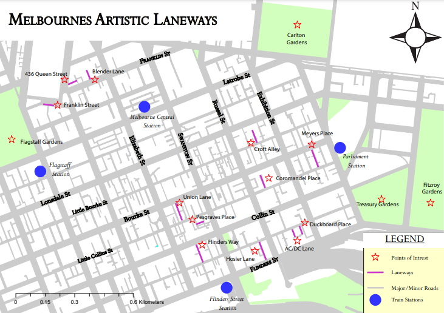

Geoportfolio
Linuka Weerasinghe
About
This website is the geoportfolio of Linuka Weerasinghe. The website entails
information that is academically and profesionally related to the field of Surveying and Geospatial Science
As a dedicated Surveyor with 2+ years of experience, I have cultivated a strong foundation in land surveying, boundary determination, and legal land documentation. My passion for precision and commitment to delivering accurate and reliable results have enabled me to contribute effectively to various projects, ensuring compliance with legal standards and regulations.
In my professional journey, I have developed a keen eye for detail, coupled with the ability to solve complex spatial problems and provide clear, actionable insights. I am proficient in utilizing advanced surveying equipment and software to deliver high-quality surveys, and I pride myself on my ability to work collaboratively with clients, engineers, and other stakeholders to achieve project goals.
Driven by a desire to continuously learn and grow within the field, I am eager to take on new challenges that allow me to apply my skills and expand my expertise. I am passionate about contributing to the development of infrastructure and communities through accurate and efficient surveying practices.
My own personal hobbies include going to the gym and playing soccer!
Academic Portfolio Overview
Cartography
Cartography consists of creating maps using spatial data obtained from sources such as publicly online government data and population numbers from the Australian
Bureau of Statistics (ABS). While there were two tests and a first practical (not included as it was more of a report rather than a map), the significant
practicals completed in Cartography 2 involved the production of three maps of the student's choice based on a specific topic:
- Practical 2: Map directed at a target audience of choice using provided data of Melbourne City
- Practical 3: Thematic mapping of a demographic's population using data from the Australian Bureau of Statistics (ABS)
- Final Cartography Map: Free-choice on topic
Below are the three maps that I have created as part of my course:
Note: If map display is too small, right-click the image and 'Open in new tab' to allow zooming of the map.
Specific User Group Map

Thematic Map
Rising Rate of Homelessness In Melbourne
Cadastral Surveying
Cadastral Law is a unique but very practical and interesting unit solely based about surveying in the Cadastral world. The subject uses
knowledge from three different disciplines:
- General law
- Urban Surveys
- Rural Surveys
The Urban Survey completed at Parkville the primary objective is to define, mark, and document property boundaries for land ownership and Re-Establishment, often in highly developed and densely populated street
in Parkville We were then asked to use the fieldnotes created on the practical day to draw up an articulate worksheet with traverse adjustment and Re-Establishment along with all aspects.
Note: If map display is too small, right-click the image and 'Open in new tab' to allow zooming of the map.
Parkville Urban Survey Final Worksheet
Industry Experience
This page will briefly cover all my work experience (as of September 2024) within the Cadastral Surveying industry. The two main companies that I have worked at
were Humphries Land Survying and Linear Land Surveying. This page will outline my experience gained and skills I have learned from working at Humphries and Linear with an
overview of my current Surveying skillset.
Humphries Land Surveying
Graduate Survey Assistant
August 2023 - February 2024
Reflecting on my experience as an Assistant Surveyor, I find that it has been an enriching journey that has significantly shaped both my professional skills
and personal growth. When I first joined Humphries Land Surveying, I was eager to apply the theoretical knowledge I had gained during my studies, but I quickly
realized that the field of surveying demands much more than just technical expertise. On a personal level, this experience has reinforced the importance of patience
and perseverance. Surveying can be a repetitive and time-consuming process, but I’ve come to appreciate the value of patience in ensuring that every detail is
captured accurately. Moreover, the experience has taught me to be adaptable and open to continuous learning, as each project presents unique challenges that require
innovative solutions.
Linear Land Surveying

Graduate Survey Assistant
March 2024 - Present (as of September 2024)
My time at my current surveying company, I realize how much I have grown both professionally and personally. Joining the team at Linear Land Surveying felt
like a significant step forward in my career, and now, after gaining substantial experience, I can see the impact this role has had on my development.
This job has taught me resilience and the importance of continuous learning. The dynamic nature of surveying projects means that no two days are the same,
and I’ve had to remain adaptable and open to new challenges. I’ve also learned the value of patience and persistence qualities that are essential when facing
the inevitable obstacles that arise in the field. This experience has made me more confident in my abilities and more comfortable with uncertainty and change.
Through these various work experiences, I was able to acquire various skills such as:
- Strong leadership abilities, acquired through training new employees
- Communication skills developed through constantly interacting with customers and co-workers
- Organisational abilities enhanced through completing key tasks and responsibilities within a given time
- Ability to comply to company procedures and managers instructions by ensuring that health and safety standards were always maintained
Skills and Proficiencies
 |
GIS |
 |
QGIS |
 |
Cartographic Principles |
 |
Adobe Illustrator |
 |
Remote Sensing |
 |
Photogrammetry and Drone Mapping |
 |
Web Design: HTML & CSS |
 |
Web GIS |
 |
Python Programming |
 |
SQL Database Management |
Credits and Attributions
The following programming languages and software were used to create the website
- HTML
- CSS
- JavaScript
- Visual Studio Basic
The deliverables contains content from the following subjects:
- Cartography 2 (GEOM2079)
- Applied Geospatial Techniques (GEOM2083)
Special thanks to the following people who have helped me make this website with their expertise and guidance:
As per the policy of using the Flaticons with a free account, the attributions and crediting of the creators of the icons are as below:
Attributions of icons used: